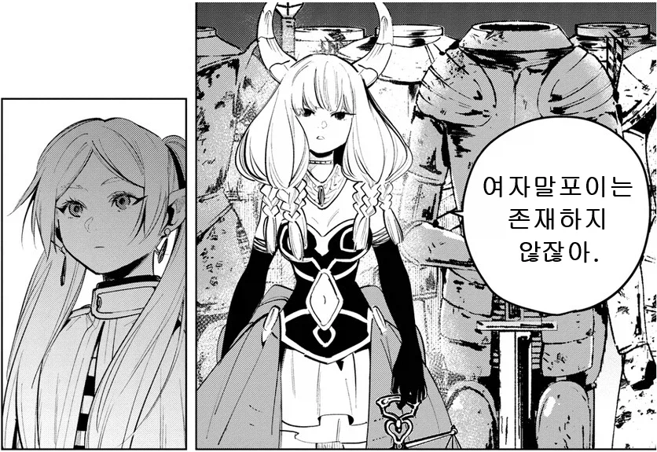

허상입니다

허상입니다
그럼 여자 말포이는 존재하는 거지?
그럼 퍼리 말포이는 존재하는 거지?
보추퍼리게이 자1위해라
죽어
아우라 네가 그려라


두대말고 세대 때리지 푸하하

연재나해라!
덤블도어 교수님이 갑자기 나타나서 공격해도 올 게 왔구나 해라, 아우라.
우소다!!!!
죽어마땅한년이었네 좀 아쉬웠다고 생각했는데
모가지잘린년이 뭘알아!!!
근데 지금봐도 능력이 너무 작위적임
양학만 가능한 능력인데 간부라니
한계가 너무 뚜렷해서 얘보다 확실하게 쎈 애들은 프리렌 처럼 눈도 깜빡 안하고 개무시할거 같은데
근데 사실상 프리렌 제외하고는 없잖아 얘는 재능도 있고 + 마족보다 더 사는 인간이 없어서 마력량이 무조건 딸리고 강한 상대한텐 안덤비니 프리렌도 그거땜에 숨기고 다니는 거고
아니지
프리렌 세계관에서도 대결해서 누가 이길지는 다양한 변수들이 존재할텐데 오직 마력총량만으로 절대적인 복종이 이뤄지는 마법이라면 힘멜 같은 놈 자기 수하로 만들수 있잖아
하긴 이세계물이랑 다르게 강자라고 무조건 마력이 높은게 아니라
전사 계열은 마력총량 낮은 정통 판타지였지
단순히 상대보다 마력이 높으면 승리 이게 다가 아니라 마력이 낮은 상대방을 절대복종의 부하로서 부리고 다님. 실제로도 엄청난 군대를 몰고 다녔고, 프리렌은 아우라 마법을 오랫동안 연구해서 해제 마법을 개발해 무력화시켰을 뿐임.
작위적인 건 맞음. 아우라의 모든 장점이 프리렌에게 안 통함 ㅋㅋㅋㅋ 억까임. 그냥 지금의 프리렌이 얼마나 강한지 보여주기 위해 만들어진 캐릭터.
해제마법 개발한게 아니라
걍 마력통 숨기는게 스승 가르침이라
나 너보다 재능 쩔고 오래살아서 내가 더 마력통 높은데?
임자 만났지 이년아? 이거 아니었나
처음에 아우라가 전사들 보내니 프리렌이 수십 년 동안 니 마법 해제 마법 연구했다며 전사에게 걸린 세뇌 마법 풀어서 무력화시킴.
아우라는 인간계 침공할 건데, 군대를 약화시키고 싶지 않아서 프리렌에게 세뇌 마법 걸었다가 패배. 프리렌은 내가 너보다 훨씬 마력이 많아도 니 군대 전부에 해제 마법 건 뒤에도 너보다 많을지는 알 수 없고, 니가 전사들 총동원해서 다구리 깠다면 너에게 승산이 있었을 거라고 함. 즉, 프리렌이 마력을 숨겼기에 아우라가 오판했고, 마력을 숨기는 것의 전략적 가치를 보여주는 승부였음.
오오 이렇게까지 기억하다니
해제 마법이 아니라 마력량을 숨겼음
악마들은 마력을 과시하는데 프리렌 스승이 마력량을 일부러 숨겨서 악마들 방심하게 만들으라고
1. 아우라가 전사들 보냄.
2. 프리렌이 해제 마법으로 무력화.
3. 아우라가 물량 공세 포기하고 세뇌 마법 걺.
4. 프리렌이 마력량 숨긴 거 해제.
5. 아우라 자살.
마력량 그 이전의 이야기야. 진행 보면 진짜 억까였음.
내가 대충 봤나보다 자세하게 설명해줘서 ㄱㅅㄱㅅ 하도 자위해라 아우라만 봐서 그런듯


자결해라.
입닥쳐 아우라

패배자위쇼하며 할복해라 아우라!

Ts말포이 코스프레를하고 ㅇㅇ해라 아우라
암퇘지보지검법을 하면서 오망꼬댄스를 춰라 아우라
그냥 자해만 해주세요
")
")
그냥 말포이도 존재하지 않는거야 영화인데 뭐